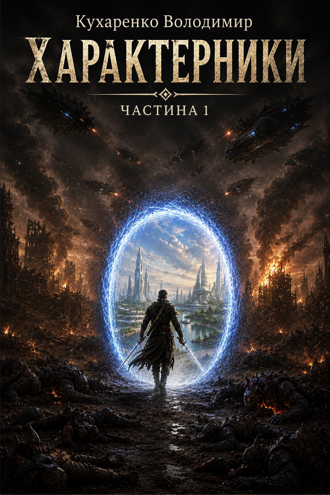

WHERE THE STORY BEGINS
Kharakternyky.
The Beginning
The main story begins with Dmytro and gradually reveals the world of the kharakternyky, other Plans and the civilizations connected across them.
Discover the book →STORIES OF WORLDS
Separate stories
within the same universe
Different heroes, worlds and eras that expand the main story.


EXPLORE
Where to begin
Whether you have already read the books or want to understand the setting, these reference sections introduce the universe.